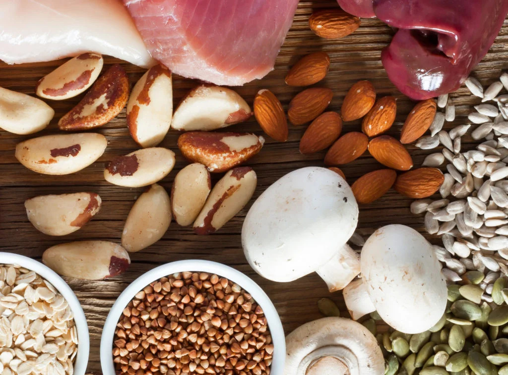
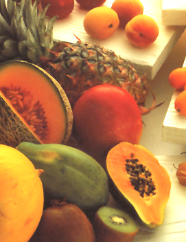

វីតាមីន B5 គឺជាវីតាមីនដែលគេប្រើប្រាស់ទូទៅបំផុត។ វាសម្បូរនៅក្នុងគ្រឿងក្នុងសត្វ អង្ករ ស្រូវសាលី ទឹកដោះគោ ស៊ុត សណ្តែក ប្រូខូលី និងគ្រាប់ធញ្ញជាតិ។ វីតាមីននេះចាំបាច់សម្រាប់ការធ្វើមេតាប៉ូលីស និងការសំយោគប្រូតេអុីន កាបូអីុដ្រាត និងខ្លាញ់ ។ វីតាមីន B5 ក៏មាននៅក្នុងប្លាស្មានៃឈាម ហើយអាចជួយឱ្យមានតុល្យភាពជាតិសូដ្យូម និងប៉ូតាស្យូមនៅក្នុងរាងកាយរបស់មនុស្ស។ ខាងក្រោមនេះជាអត្ថប្រយោជន៍មួយចំនួននៃវីតាមីន B5 ចំពោះសុខភាពយើង ៖
១-ប្រយុទ្ធប្រឆាំងនឹងភាពតានតឹង ៖ វីតាមីននេះជួយប្រយុទ្ធប្រឆាំងនឹងជំងឺនានាដូចជាជំងឺផ្លូវចិត្ត ។ វីតាមីន B5 ធានាឲ្យមានការថយចុះកម្រិតនៃការថប់អារម្មណ៍ និងភាពតានតឹងក្នុងរាងកាយ ។ ការភ្ញោចដោយផ្ទាល់ទៅលើអ័រម៉ូននៃវីតាមីននេះជួយថែរក្សាសុខភាពទាំងផ្លូវកាយ និងផ្លូវចិត្តឲ្យបានល្អបំផុត ។
២-ជួយទប់ស្កាត់ជំងឺស្លេកស្លាំង ៖ អាស៊ីត Pantothenic ត្រូវបានគេស្គាល់ថា អាចរក្សាកម្រិតអេម៉ូក្លូប៊ីនក្នុងឈាម ដូច្នេះវាអាចកាត់បន្ថយឱកាសនៃការខ្វះជាតិដែក ឬជំងឺស្លេកស្លាំង។ ការទទួលទានវីតាមីន B5 ឲ្យបានគ្រប់គ្រាន់គឺល្អបំផុត ជាពិសេសប្រសិនបើអ្នកមានជំងឺស្លេកស្លាំង ។

៣-ល្អសម្រាប់បេះដូង ៖ វីតាមីន B5 ជួយថែរក្សារមុខងារសាច់ដុំបេះដូងឲ្យដំណើរការបានល្អ ។ វីតាមីននេះក៏ធ្វើឲ្យកម្រិតកូឡេស្តេរ៉ុលមានតុល្យភាព និងគ្រប់គ្រងកម្រិតសម្ពាធឈាម ដូច្នេះវាអាចបន្ថយឱកាសនៃការកើតជំងឺលើសឈាម ។
៤-ល្អសម្រាប់ស្បែក ៖ វីតាមីន B5 ជួយឲ្យស្បែក និងសក់មានសុខភាពល្អ និងភ្លឺរលោង។ វាប្រយុទ្ធប្រឆាំងនឹងភាពចាស់នៃស្បែក និងរក្សាពណ៌សក់ ។
៥-ពង្រឹងប្រព័ន្ធភាពស៊ាំ ៖ វីតាមីន B5 ក៏មានប្រសិទ្ធភាពយ៉ាងខ្លាំងនៅក្នុងការពង្រឹងប្រព័ន្ធភាពស៊ាំនៃរាងកាយ។ វាជួយប្រយុទ្ធប្រឆាំងនឹងការឆ្លងមេរោគទូទៅ និងគ្រោះថ្នាក់ជាច្រើន តាមរយៈការបង្កើនចំនួនកោសិកាឈាមសរបស់អ្នក។ អ្នកដែលមានប្រព័ន្ធភាពស៊ាំមិនសូវរឹងមាំ គួរតែទទួលទានវីតាមីន B5 ក្នុងរបបអាហារប្រចាំថ្ងៃរបស់ពួកគេ ៕
វីតាមីន B5 : ការចម្អិន ធ្វើឲ្យវីតាមីន B5 បាត់បង់ដល់ទៅ៥០% ហើយបើក្លាស្សេរឹងវិញ នឹងធ្វើឲ្យបាត់បង់វីតាមីននេះ ដល់ទៅ៨០%។ ដូច្នេះ គួរទទួលទានអាហារស្រស់ជានិច្ច។ វីតាមីននេះ មានច្រើននៅក្នុងបន្លែស្ទើរគ្រប់មុខ ផលិតផលពីសាច់សត្វ ត្រី ស៊ុតក្រហម បន្លែស្លឹកពណ៌បៃតង និងធញ្ញជាតិ។

ត្រូវការចាំបាច់ ដើម្បីបំលែងកាបូអ៊ីដ្រាតខ្លាញ់ និងប្រូតេអ៊ីន ទៅជាទម្រង់ដែលអាចប្រើប្រាស់ជាថាមពលក្នុងខ្លួន។ កង្វះវីតាមីននេះអាចបណ្ដាលឲ្យការផ្គត់ផ្គង់សារធាតុចិញ្ចឹមទៅកោសិកាមិនគ្រប់គ្រាន់ រួមទាំងហ្វូលីគុលរបស់សក់។ ដូចនេះហើយ នាំឲ្យកើតមានការជ្រុះសក់។